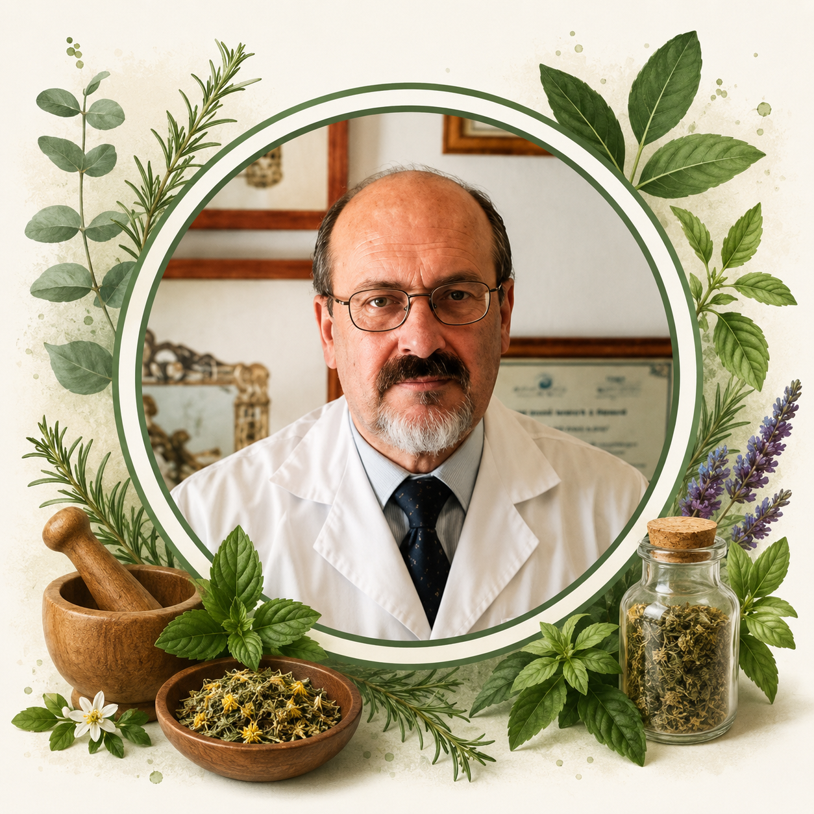

Bienestar natural
Bienestar natural para tu día a día
Suplementos • Nutrición • Naturopatía • Productos naturales

Suplementos • Nutrición • Naturopatía • Productos naturales
Máxima calidad
Personalizado
Integral
Con tu salud
Ofrecemos orientación personalizada enfocada en bienestar integral, hábitos saludables y acompañamiento natural.
Orientación complementaria enfocada en bienestar muscular y movilidad diaria.
Planes adaptados según objetivos, hábitos alimentarios y bienestar digestivo.
Acompañamiento orientado al descanso, equilibrio diario y hábitos saludables.
Orientación personalizada para mejorar calidad de vida y bienestar general.

Atención personalizada en naturopatía, nutrición y bienestar integral con acompañamiento adaptado a cada persona.
Experiencia orientada al equilibrio, hábitos saludables y seguimiento personalizado.
Conocer serviciosNuestro acompañamiento sigue un proceso sencillo y personalizado.
Contacto rápido mediante WhatsApp.
Evaluación personalizada.
Recomendaciones adaptadas.
Acompañamiento continuo.
Contactanos por WhatsApp o visitanos en Av. Betanzos 13, Madrid.
Reservar cita